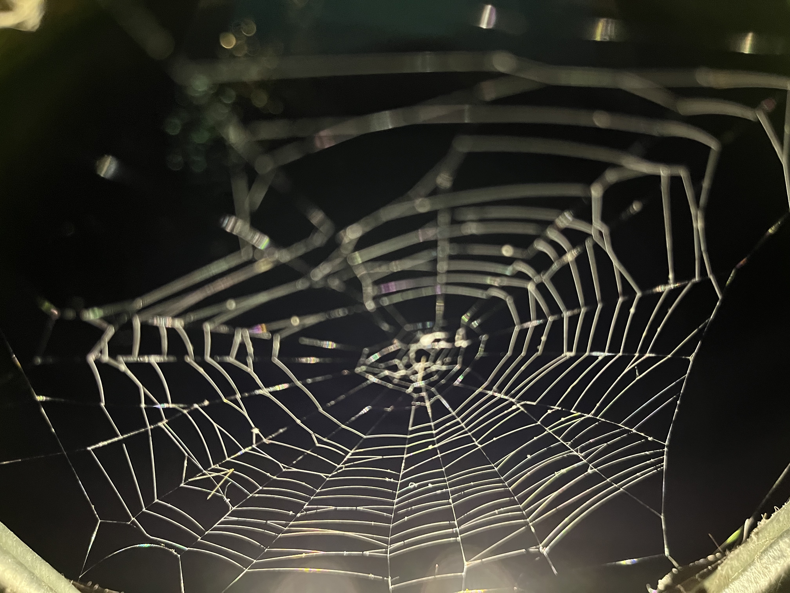
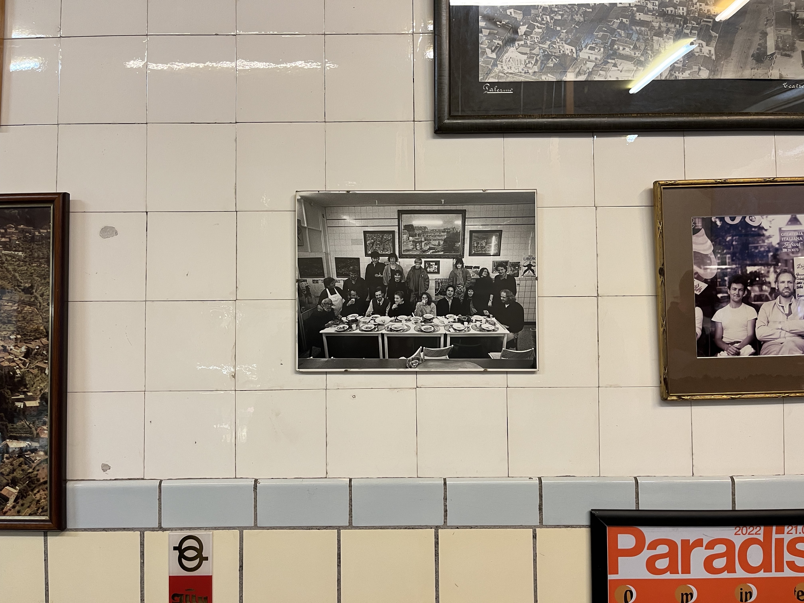
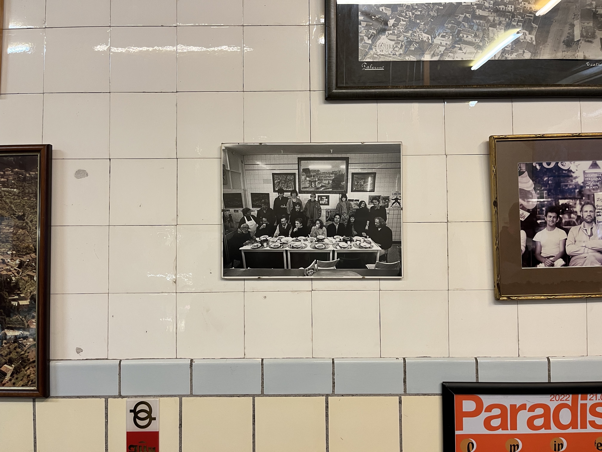
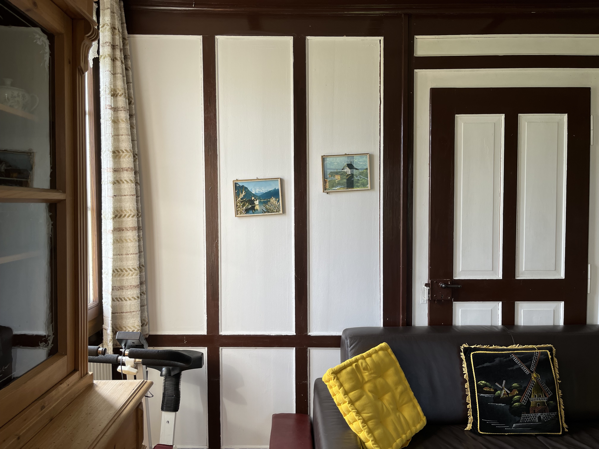
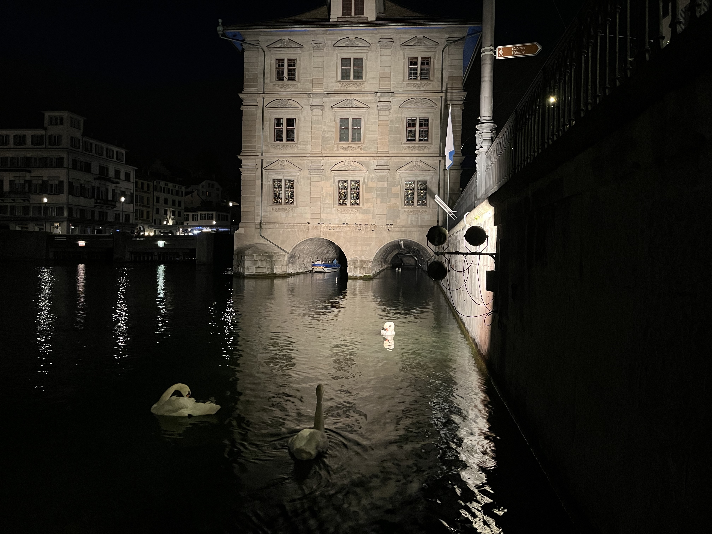

welcome, i depart in 9 hours and 6 minutes from Chicago, Illinois on June 5, 2022. after that flight i will arrive in Barcelona, Spain and document my travels beginning from there.

boarded a flight at O'hare and walked to the back left aisle. i stuffed my blanket far under my seat and opted out of the mini pretzels. got fresh orange juice at the airport and took taxi to the bed and breakfast (pictured above). walked through the neighborhood of Gràcia with tight corridors and .90€ espresso. we accidently made it all the way to park guell where we watched selfie sticks pop out and overheard mostly english speakers. walked back and enjoyed the porch before tapas. didn't fall asleep until sometime after 11 to work through the jet lag.
woke up early for a great breakfast of pastries, cured meats, manchego cheese, orange juice and pan con tomate before making the long walk towards the Museu del Disseny (Design Museum). stopped on the way at an herbalist for pure rosehip oil, a large indoor market to look around, and a stand for coffee. after continuing again down the Avenida Diagonal, we walked by the swarmed Casa Batlló and watched everyones chaotic group pictures before taking refuge in the alcove of a nearby spy store. we crossed one last busy avenue to get the the museum and started bottom to top in a vestibule with huge ceilings. as we progressed, the floors went from common objects to silhouettes and fashion. the headboard below was one of my favorite things along with the 1992 Olympics mascot, Cobi. tickets for the museum were 4€ and i walked through the library afterward before posting up on the terrace.
leaving the museum, we walked towards the Torre Glòries building next door which reminded me of The Gherkin in London. went through gran clariana park where some of the chairs were a lot taller than others and towards Sagrada Familia. we sat for a while in the park right nearby and admired the melting basilica and the crowds it drew. there was a man performing expressive dance in a wheelchair working up and down a lot of the closed off street.
repeated yesterdays breakfast and hunted for a SIM card. this included a trip to Mediamarkt where they had a big TV's that had nice animations playing on them. downstairs there were big fridges with Samsung brand cheese and cookies. visited a department store across the street still without a SIM card. checked into a new hotel that afternoon and spent a lot more time walking around the tighter cobblestone streets in Ciutat Vella. passed by a cafe called Ginger which i bookmarked in my brain for later. it looked like a ship galley with green lights and tight spiral stairs but lots of seating in a small square outside. after navigating a bit more we ended up at a store called Doshaburi which was the best shopping we encountered in the whole city. it was a tiny unmarked store front overflowing with boxes and velvet hangers with a man named Yoshimitsu sitting outside. we spent some time with him and he shared his personal experiences in fashion ventures, stock rooms, and growing up in Japan, speaking of the products he sold as much more of a lifestyle than anything else.
breakfast was spent in the courtyard of the hotel before going down to the water nearby and admiring all of the Russian yachts docked there. they were next to a mall that had VR racing with the car seats and everything. the whole dock took a long time to walk around and lead towards a nice view of a nearby mountain where gondola cars runs to. i found a SIM card at a LED covered phone store that sold phone cases with phrases like "Pablo Escobar is calling". it was on the way to La Boqueria where they made little smiling marzipan treats. there was a crazy amount of Iberian ham here. had a good empanada and chocolate before continuing the walk towards El Pobre Sec.

the heat caused us to take primarily side streets on the way because the shade was better there. passed by many different haircut styles and supermarkets in El Raval which is Arabic for "suburbs". some thick trees with ancient tumors greeted us towards the entrance of Palau Nacional de Montjuic and it's grand steps. right beyond the ornamentation was Mies Van Der Rohe's intensely simple Barcelona Pavilion with 4€ student tickets. it was almost entirely empty both in furnishings and guests which added to the stark marble atmosphere.
after the pavilion we spent an incredible amount of time trying to rent Barcelona's City Bike equivilent called Bici. i filled everything out before realizing i don't have a DNI number because i'm not a european born citizen. got back to the hotel by alternative methods and spent the night in the rooftop pool.
had another breakfast in the courtyard before checking out and going back to BCN. had a flight to Mallorca that was so short i barely had time to put my head in my lap before the 15 minutes until landing warning. got there, got in a taxi, loosely fumbled in Spanish, arrived in familiar cobblestone winding streets. they were even smaller than before and the driver could zip by people that had to stand still for him to pass. we checked in after passing through a courtyard out of Verona in Romeo and Juliet. the stone stairs were very very worn to the point of having small dips in the middle and we got to our room with floor to ceiling doors that opened on the busy street below before exploring the building. the home owners, Francesco and Sebastian, showed us through their apartment (which was featured in an interior design book called Simply Contemporary) and had been stuck in time from a hand crafted era. books and wooden furniture with religious embelishings were stuck to every surface and it felt surprising to see that there was even working electricity.


went through a maze of empty or completely cluttered rooms and stair cases to make it to the roof and see the view of Palma Cathedral just two roof tops over. after coming down we walked through the city for the first time, got good empanada, smelled nice baby perfume, and had gelato.
on Saturday, we heard some birds and bunnies in noisy cages that were too small from the street on the way to Cafè Riutort. had one of my favorite breakfasts there and made it to Es Baluard Museu d'Art Contemporani de Palma (Museum of Contemporary Art). the best work was in the basement past the Joan Miró costumes where they displayed Miriam Cahn, Robert Mapplethorpe, Francesca Woodman, Marina Abromovic, and others.

spent the rest of the day mostly on the roof reading and chatting with the nice cathedral view. also walked to good thai food and passed a chaotic marathon taking up the whole street complete with emcee and american house remixes to celebrate the finish line. the below video is of some motivational figures in attendance.
today started with a walk to Can Joan de S'Aigo, a cafe from 1700 that is largely preserved as it was with the same menu options. from there, a lazy Sunday walk towards downtown to find a cab. the cab ride was a 25 minute journey East to a little maarket nearby in the parking lot of an industrial area.
the town and surroundings were overwhelmingly barren and dry with buildings sparcely placed. the buildings outside of the market were on a gradient of historic preservation with newer looking renovations in some while others were totally frozen in time and had weeds and tall grasses spilling over the newly built sidewalks in front. the market had some good things, lots of old wood furniture and strange jerseys/clothing. inside the industrial park where it was held was a good looking antique store that picked lots of religious iconography and sculptures and dressers and chairs. we spent a long time wandering there and wishing we had more space in our backpacks. favorite things were a neon green road bike, a table with dead bugs pinned down and numbered inside, a cross display (pictured above), and a solid stained wood bird cage with ornate windows and spires.
got breakfast, went to fancy, extensive, and rude store called Kling, visited Cathedral de Palma, and packed for the airport. the cathedral had heavenly light coming down from the stained glass above the pews. the inside was split up into separate friezes and sculptures guarded by stairs or fences along the entire perimiter. each of them were unmovable monuments that were enshrined in details and years of work. the front of the cathedral was thourough with two different worship altars on either side of the massive main altar. one, a very traditional and towering gold scene with sculptures of angels protecting those eating supper or wine and crackers. the other side was a more abstract, cracking, organic seascape covered in clay with different mosaics and figures poking out in repetition. the walls were obscured and the windows looked like they had smoke damage but the ground had nothing except beautifully simple marble benches on either side.
made it to cagliari, walked, bought perfect yellow pants, and ate around a nice circular plaza just below the Bastione di Saint Remy stairs. from the top you can see the port on the south of the city, the cargo ship docks and the wind farms beyond. i later learned that the wind turbines are next to the islands oil refinery as a governmental program to offset the emisions. it seems strange that they have to import oil to such a remote place for one singular purpose of refining and exporting. this was the view of the city from there.
spent the morning walking a bit until we arrived at a tailor to alter pants of yesterdays purchases. they didn't speak any english but we managed to express enough of what we needed done and hoped that they would understand and have them done before we left just two days later. from there we sought out the option of catching a taxi, or renting a moped, or a city bike. to our unpleasant surprise, either nothing we needed was open or we couldn't come across it. this meant we would walk to the beach which said it was 6 km away on maps and we had already been walking for quite some time.


we made it to a nice area by the water after stopping in a tiny and very friendly cafe. i enjoyed my first taste of lime San Carlo chips. they're great actually. i think they represent what most american chips would like to taste like but are simple and hit the right notes. we ate them on our walk to Poetto beach which turned into a walk towards the wrong direction and required some rigorous shortcuts. we eventually steered to where we were going and crossed the above bridge before arriving at what looked like an abandoned stadium. in the parking lot was a man riding a red motorcycle around a course of cones and another man parked on the sidewalk yelling "vamos" instructing him to speed up and slow down when he took turns or hit the straight away. we admired before continuing through a desolate and weeded parking lot back to the water and in the distance, i spotted some umberellas. this wasn't the beach we planned for but we found a semi private and local spot that was only 25 meters or so wide and had no less than 4 chihuahuas. the water was clear and we posted up on a blanket and got neon green mint flavored shaved ice while enjoying an afternoon at the beach.
got up early today and walked to Marina del Sole to meet up with a man with a boat. his name was Andrea and he had beautiful curly hair and lived at sea on a boat named "Senza Vergogna", or shameless in English. he graciously invited us on to his sail boat and took us out while sharing common interests in music and photo. he has a photo show up in Cagliari now that aligns pictures with audio that he and his partner recorded on his boat. the recordings are his trumpet playing along with the ambience of the sea which he rigs up to be recorded while he works. he was generous in sharing his home and stories of growing up in Rome while also being somewhat of a tour guide. he smoothly brought us to a rugged rocky mountain and told us lore about how the rock formations came to be through the help of god's foot crushing the devil. he fed us the best olives i've ever had along with crackers and then brought out german beer and a feast. the picture is included in the "what i ate for dinner" tab at the top because it was a favorite meal. after serving us he dived into the water and paddle boarded to greet a friend docked beside us on the Ichnusa sponsored boat. its a Sardinian beer bought by Heineken that docks and hands out alcohol. he came back and we paddled out for a while before laying on the boat and enjoying afternoon espresso and cookies. we took the boat to Poetto and finally saw the longest beach on the island.
we spent the rest of the day on the boat, in and out of the water and taking in the sun. he shared more stories about the Italian mafia and why he hates that his girlfriend is moving to Paris. he was the best possible person to have met and spending the day on his boat became serene.
got up early, retrieved clothes from the line on the porch, packed up, and got pistachio pastries. i'm on the plane now to Paris to meet some other soldiers, one of which has a mohawk. took a taxi from the airport and pulled up to an open door at a beautiful apartment (pictured below) with hummus in the fridge already and some champagne for our arrival.

we walked out in the Pigalle area for some coffee and orange juice when we passed this beautiful train shop that i loved. all the model trains were such detailed and well preserved objects just sitting in the window. we walked to meet up with a friend when jetlag hit within the group and we had to turn around for a nice bistro across the street from us that had lots of vegetarian options.
we had a good breakfast down the street at a cafe called Marlette. then we commenced what would be an all day walk towards Le Marais. on the way seeing I.M. Pei's Louvre pyramid and some kilo shops before some famous green falafel and tight crowded streets. some stores had mostly weird and knock off merchandise but others had nice vintage clothing.


in the evening i saw Place Vendome for the first time and the surrounding area just after walking the field at the Louvre. we saw a beautiful courtyard where the Comme Des Garcones store was located and got to spent some time in the store. it was one of my favorite stores i had visited so far on the trip because of how unassuming and sparce it was. the whole arrangement was just a rack or two of clothing in every area based on the clothing line and everything was in a large vertical alley. it was hot but the sun was setting and we went to the Ritz in the hope of finding an afternoon tea or snack because of all the walking we had done. we weren't so lucky because the dress code forbid me from wearing shorts and we did more walking before calling it for dinner. they had space at ferdi and we were close so i had the best cheeseburger i've ever had with a caesar salad. the restaurant was full of knicknacks and good character with the bathroom mimicing the rest of the space. there was something written on the mirror that looked like it said my name that's just above the coconuts in the above picture.
walked in the morning to sit in a hot but beautiful cafe and stopped on the way to see a nearby cathedral. it was simple and ornate but the best part was the wicker chairs with very aged wood. afterwards, we spent some time exploring near Montmarte and found a small store by a French man named Marc le Bihan. everything was beautifully handmade and to enter the store you had to pass through a small stone garden on the ground. it was a strange buffer zone.
when back at the apartment, i hung all of the laundry on a pulley above the bath tub and took some pictures with the low hanging chaos. spent a lot of the day in and around there. the above picture is the kitchen in that beloved apartment lit up at night.
in the morning i made it up to Montemarte and saw the view near Sacre Coeur. there was a man covered in silver who stayed still mostly and i wasn't sure if he was real of sculpture because of where he was on top of a big banister. there were a lot fo great winding streets at the top of the mountain and to my surprise a lot of stores and restaurants. i thought it had been partitioned just for the cathedral but lots of life existed otherwise. the view in the below picture isn't actually from Montemarte, it's from the Pompidou later that afternoon.


i loved the inside out architecture of the building and taking the escalator all the way to the top. the entrance looked a little like an overstimulated airport inside with a single bird picking up scraps in the cafeteria. on the top floor there was a Ray Charles exhibition which was great and pretty impressive. some of his large sculptures were just as impressive as his small ones inside of glass bottles. there was a single piece of wood carved into a human on a stretcher and a whole family scaled to the exact same height but keeping their proportions. one of my favorite pieces happened to be a self portrait that the photographer took of himself (pictured above). when i walked into that room that contained only the picture i thought that the walls on either side of me were curved when in fact, the picture, glass, and frame were all curved on a curved wall. this gave this illusion that other things were distorted but it was just the picture coming out towards the viewer. the rest of the top floor on the Pompidou contained some great photographs by August Sander and Otto Dix paintings. we spent some time there before meeting a new friend outside by the Louvre. on the walk home after dinner i liked looking at the spider webs on the bridge near Notre Dame.
today started with a prolonged picnic in the park just south of the Pantheon. it was prolonged because of how long it took to get groceries/snacks/sliced meat. everything was delicious of course and i took a bike from there to Galeries Lafayette. the below picture is the view looking up from the interior atrium and the below picture is looking down from the roof. it was scenic inside but so busy and nothing really caught my eye.


we walked from there to Palais Royal where we went through the park and arrived at the Rick Owens store. the chairs he designed and the vintage army cloth nailed down as carpet in there were my favorite. it was small and the first store he ever opened. they even had a wax figure of him as a tall monolithic figure dressed in his own clothes behind the cash register. we met a sweet Sweedish woman who was telling us about some of the clothes' stories and on our way out saw Rick Owens' wife, Michèle Lamy. she was a French socialite who is his muse and looked crazy to run into. we got back to the bed and breakfast and went for a dip in the cave like pool and sauna. got some dinner in the 6th and went to an underground bowling alley which felt like a low ceilinged bunker.
walked pretty much all morning/afternoon around the 6th starting down at the canal. there were some objects that were pulled out of the river along the side of the embankment including this motorcycle.


after a croque madame i went to the Musée des Plans-Reliefs which was a museum of scale military models inside of a large 17th century compound in the 7th arrondissement. the shelter was called Hôtel des Invalides and today houses museums and historical archives. the models were massive and from hundreds of years ago but one of the stars of the show was the above model of Mont Saint-Michel. the whole room was pitch black besides the spot lights on the intricately textured surfaces. from there we met a new friend on the lawn of the eiffel tower and sat to chat for a while. from there we took a taxi to La Seine Musicale and crossed a rainbow colored bridge while the sun was starting to set. once inside of the venue, it looked like Brooklyn had overtaken the crowd as everyone was covered in sparce tattoos with shoulders exposed. it was a much more artsy and young crowd as we piled into a massive auditorium and sat down just as the lights dimmed. an orchestra and conductor came on stage with dramatic cold lighting followed by Bjork in an all silver, sequenced, and shaped suit with matching horns on her hat. she sounded good and carried the same voice thats in her recorded songs. highlights were come to me, hyperballad, hunter, bachlorette, and stonemilker. the below video is just before the encore.
stressful sold out train ride from Paris to Antwerp took twice as long. got to antwerp early afternoon and walked from the train station through Stadspark to the apartment which was divided strangely on two floors. one of the rooms being taxidermy themed and the other with nicely textured red walls. we went back to the park to see a pond view from a nice bridge and a zumba class on the big lawn. it felt quiet and small yet populated by interesting people who were willing to talk. walked the whole evening through jewish neighborhood and an old dividing bridge.

after dinner we stood for a while around a beautiful revolving advertisement. there were 3 sides with differing messages and one blank. it was mesmerizing in a way that felt completely foreign.
had a proper English breakfast followed by a delicious coffee candy wrapped in a strangers face. went straight from there to the mode museum which was unfortunately closed until the fall. i was hoping to see the work of the Antwerp 6 and other Belgian designers but instead spent a while in the art and architecture bookstore there. after walking a bit we got nice stationary and some thrifted clothes. then off to the contemporary art museum, M HKA. there was a really great moving images show from the 1990s called “Lenin Was a Mushroom” which included work by Andrea Fraser and Pipilotti Wrist. the view from behind the taxidermy was an installation by Nedko Solakov.
after that, we took a walk down to the water, past Salu Tiffin Time, and a Buzz Leclair poster. there were some beautiful little parks and courtyards at schools. that night i saw a bathroom that resembled the inside of an oyster and had the best steak i’ve had in 8 or 9 years.
had a similar breakfast and coffee candy before heading to the train towards Amsterdam. once we arrived we were in an area called De Wallen where we had espressos and orangina before checking in to the hotel. there were some strange souvenir shops and about 100 hamburger restaurants all before our hotel. i also noted these tiny versions of two seater smart cars that have an entirely flat back and very cute roof racks. walked for a while through Oost and saw a beautiful and expansive piano store. saw some parks, had coffee, and started counting how many Vanmoof bicycles there were. by the end of the day the count totaled 102. there was a Magnum photographers show at foam museum which was alright as well as a show all about the potato famine.
 

we walked the canals all night in Centrum and had dinner just across the street from the vice office. the walk home that night was a long one but very enjoyable because of seeing all the bikers and unique shops along the way. my favorite was a kids/junk/stuff shop that i just got to look into the window of called Knuffles. right near it were some of my favorite brick buildings squeezed in between two older homes or shops which forced them to only be 10 feet wide or so.
weird caesar salad for breakfast and then a taxi to a train to avoid having to change over trains at a few different stops. we got on and got stressed about not having seat reservations because every seat said they were occupied but ended up being fine. we were all able to sit together for the 7-7.5 hour journey and even had this dog accompanying us for the ride. the views were nice and the dining car was a favorite to spend time hanging out in. it was harder to walk on the train than expected but i had to stretch every once in a while as that occupied our whole day before arriving in Berlin central station.
after figuring out the train system, we headed towards Peter Eisenman’s memorial to the murdered jews and sunk below the surface when walking through. the size and scale of the individual blocks of it become much more apparent once you’re submerged under the surface in it. from there we saw our first slab of the Berlin wall, some Knoll chairs, and a Bulgarian travel agency before going into a gallery with foam cow hugging sculptures and nice pictures. i was a big fan of the portraits gazing over the street scape at checkpoint charlie in the center of the city. it marked a crossing point for the Berlin wall which still houses a gate.

after walking a bit more, i stumbled upon an outdoor market right near the Pergamon museum with few books in English. they did, however, have a lot of movies, bluetooth gloves for talking on the phone, and a fire powered recycled boat that is propelled from the water pressure cycle of the flame. from there, i saw pictures hung at the KW institute which was all contemporary art and happened to be showing work for a biennial. my favorites were some woven portraits and a holocaust timeline by Ariella Azoulay.
after a breakfast across the street, we took the S1 train towards Wansee and got off at Schlachtensee pond. we walked towards Heinz and Renates apartment on a very quiet street. i hasn’t seen them since 2016 but it seemed as though not much has changed, they’ve been in the same beautiful home since 1974 surrounded by their watercolors and paintings. they prepared a beautiful chocolate and strawberry cake for us which was delicious and we caught up over some eis coffee (which is ice cream not cubes). they showed us their art for a bit and then we went swimming in the nearby lake. walking to the lake was beautiful and serene through their quiet neighborhood. the streets are all cobble and there are some beautifully preserved homes towering over the sidewalks as well as some more fixer-upers that Heinz and Renate said nobody in the area would buy. we had some boiled wurst and pretzels at a tiny cafe right on the water after swimming. we took the train home that evening and had a good home cooked meal before spending some time walking and seeing a show by some friends we met in the park.
today was a bit more restful and we were able to take our time getting out of the house to check out a vintage store and get a haircut from some people who spoke no English. we stopped a lot on our way through Friedenau at cafes and for ice cream. there was a big Hertha BSC fan basis at one of the stores we were in so everything was decked out in soccer jerseys and posters. there was some weird construction and other confusing objects like the below photo of a casket showing more loyalty to sports.
after some good Italian food we trained to Westend and found a nice bowling alley that included a full throne of pins and a fishtank. there were some other weird objects and sculptures scattered all around including dressed manequins and bowling balls that immitated different fruits and objects. the walk after bowling was one of my favorites in a while. i went over a nice highway at sunset, by some good graffiti, and into a park with a hotel overlooking a lake. we got some mcdoo just before seeing one of my favorite stores in all of Berlin that sold model airplanes and sets for model displays. the windows contained immaculate constructs of non existant airports and airplanes galore.
the day started with a nice walk to a nearby market where i had some of the best samosas with a sweet sauce i've had in some time. i watched the ants on nearby bricks and waited for a bit before taking the bus to more central city. we couldn't enter one of the big parks because of some sort of festival restricting access but got to a nice field that lead us to the Hamburger Banhof. it's one of the bigger contemporary museums in Berlin with an exhibbit showing Anselm Kiefer (below). as well as some more pop cultural art, biennial work, Joseph Bueys, and Andreas Gursky. it had some disorienting rooms that we were lead through in checking out the newer works about Abu Grahib, covid, and other random video works.

from there i walked a bit to see the Gunter Liftin Memorial. he was said to be the first person killed under the occupation of the Berlin wall. it was in the form of a watch tower still preserved. i continued the historical afternoon sitting in a cemetary on the canal with a lot of religious iconography and benches with branch shaped legs. from there i walked all the way to the Berlin Wall memorial through the neighborhood of Oranienburger Vorstadt. the memorial beautifully incorporated historical remnants and photos with new architectural transparencies to show where the wall or other monuments once stood. it was a meaningful way to capture and commemorate everything from a dark era. i continued walking through some crowded areas to Hasenheide Park which was a favorite spot. i made it around the park and to Kreuzberg to get some of the best dinner. the streets in the Turkish area are full of a lot of life and repetitive graffiti.

i walked through the morning as usual before i started losing energy. i was able to get to this strange and isolating Dutch memorial, the Lustgarten, and the Design Panopticon. the panopticon was strangely thrown together as a historical representation of all industrial objects in some shape or form. they had an iron lung in the entrance and crazy arrangements of manequins with lights, goggles, levers, and anything else imaginable. the owner of the small museum greeted us when we entered and showed us an ergonomic, asymmetrical metal object which he urged us to think about and at the end of our tour, guess on the objects function. i was lost but after some deliberation figured out it was an old design for a door handle. i was confused when he said we use it everyday in our homes and all homes have them in some form because it looked like a strange cast or helmet. we left the museum and headed for a cafe where they had this delicious german flatbread that was a little salty but had great ham and peppers.

that afternoon, i took the train around 40 minutes north to Bard Berlin and walked around a park and some campus buildings. there wasn't a ton to see where it was so i sat for a while and took in the area. then, i made my way through Niederschonhausen and saw a few of my favorite cars i had spotted in Berlin. the neighborhood we saw was pretty quaint and empty but i like seeing those areas and whats around. the streets lead us into a thick forrested entrance to a park where we sat on a tree branch for hours and watched those who passed by. the night lead us to walking around Mitte because we wanted to meet a friend at Golden Gate but the area was hostile to tourists.
there were some good dogs on the way from Friedenau to Kreuzberg where we got to the Jewish Museum. the Daniel Liebiskind designed building was powerful and full of unexpected angles and rooms that evoked very particular feelings of desolation and disorientation. the windows on the exterior were in wild shapes and it allowed light inside in strange ways. i liked the museum but it was hard to follow an institution that is covering so much history of one thing.
from there we sat on the side of the road for a while and talked about the favorite objects we saw and the area before continuing on to Liquidrom. it's a spa with saltwater tubs so that you can float and listen to underwater techno. the building had crazy looking dark chambers and saunas and surprisingly a lot to enjoy and spend time chilling in. i really relaxed that afternoon and came out to see some nice gloomy city moments before heading home to cook some dinner.

today was the day to leave Berlin so we headed to Berlin Central Station and saw the big Ritter Sport chocolate bar sculpture before picking up a rental car and hitting the road. the below model is of the central station entrance which was one of the most chaotic parts of the city we experienced. i especially liked the color of the taxis there though.

the road was highway for a while and the drive to Hohenhaus took about 4 hours. notable stops on the way included driving through Dessau to visit the Bauhaus. the inside was beautifully restored and there were a bunch of students hanging out outside near a cafe. the food looked good and the low ceilinged museum inside held strange construction and debris remnants. i wasn't surprised with how beautiful the building was or the easter eggs nearby like Walter Gropius street but it was exciting for me to see it. we hit a mcdoo on the side of the road after figuring out how to fill gas up and they had a nice play place where we were able to play basketball. arriving later at the hotel was exciting and beautiful. the farm property and surrounding town had a lot of character and i was happy to get to be in such a small rural area. i got some laps in the pool before dinner on the terrace and exploring the lawn where i met a very nice slug.
we had a simple breakfast on the patio and stole fruit for the upcoming drive. the first road stop we made it to had the below church on top of a hill isolated from everything else and i sat inside alone to realize the strangeness of southern Germany. this, Wurzberg, and Eisenach, the town Bach was from were the most notable stops on another 4 or so hour drive before reaching Bad Herrenalb.

the town was strange and smaller than expected but we later found out people mostly come there in the summer for hiking and spas, neither of which we really had time for. i walked alone to take pictures of a carnival/beer garden i had spotted earlier when driving around waiting for a parking space. the town was very photogenic and i kept exploring before coming back to around Hotel Harzer and eating dinner in that area. we walked for a while after, starting up a hill we were eyeing during dinner. there were some interesting construction spots because i liked seeing the old German architecture surrounded by scaffolding. as the sun set we made it back and stayed in reading and taking more pictures around the hotel.
the below picture was taken of the sunset which i watched from 4:30-6 am becuase the air in the room was thick. it smelled weird enough for me to believe there was mold or something going on but thankfully i could hang out on the porch and walk more in the morning until we were ready to get back in the car and enter a new country. after getting in the car, i was the one who drove it into the car elevator at the hotel and tried patiently to back it out of the extremely thin area to exit the garage. this was the slowest and most repetitive part of the day after i boxed myself into a corner backing up over and over until i could get the car into the light and to Switzerland. we stopped in Basel and didn't see a ton but had pretty great tacos. good architecture there also. the drive in entering Switzerland was quite beautiful and full of mountainous drop offs. we arrived in Zollikofen and got groceries after checking out our home for the next few days and the expansive corn/wheat fields behind it. i was eager to explore and find the river that was rumored to be just 500 meters from our door.
this morning, i drove through the ever confusing streets of Bern which was only about 10 minutes away but took a bit longer to navigate because of the street car intersections. we cooked breakfast from some of the sausages our Zollikofen hosts had made and left for us before heading towards the water. the below picture is a favorite corner in our living/dining room at our accomodation. 
much of the rest of the day was spent down at the water just behind the corn fields at the home where we stayed. the corn abruptly turns into wheat in a solid line closer to where we walk. the rows of corn were so symmetrical that they made us question natures geometry. later that evening we took a walk down to visit nearbby cows with flies covering their noses and eye lids. some little piggies were off the main street on our way which we stopped and visited with as well. the town of Zollikofen is quite limited but i didn't mind being near the water or hearing the bells around goats necks at night.
from across a central city bridge over mysteriously blue water, we could see 2 bears stomping. it looked like an abridged version of a zoo but in a bit of an unexpected location. it was right in the center of Bern and seemed to be a main attraction. the bears were contained but could choose to walk underneath spectators into a barbaric looking stadium ciircle with dead trees. there was even a one room hotel on the very outskirts of the cage where people could chose to sleep with the bears.


the grocery stores strangest items were moo bar's, bottles of french dressing, and american tradiitional bbq marshmallows. we took our groceries down to the water where there was a little camp stove. first collecting brush, then dry pines, then mid sized sticks and logs. the logs were tricky because there was a dull hatchet there, chained down with airplane cable and it didn't feel like we were going to get the whole log to catch at the rate we were going. after further exploring we gathere the proper materials to build a small teepee in a cast iron alcove and light a small fire with lots of brush and smoke. we cooked some pork hot dogs that were made on the farm we lived on and watched them pop under the heat. pressure of the insides pushed the hot dogs to become mutilated, half-naked sausages. one of which didn't make it and was subsequently fed to a dog.
we drove straight out of Zollikofen to see Lucerne's small city center. we had thai food and walked through a few unsatisfying blocks. as soon as we got to zurich we were stressed out by parking along the central canal which didn't treat us super well. we drove in circles and made it to a beautiful shaded street with a twsity tree i greatly admired just next door. walked through a very oversaturated downtown and to the canal where the ducks fended off toursits. our hotel was an excuse of an overinflated cty with the comfort seriously lacking. dinner down the street was more filling than it needed to be and when i was done they brought me another plate, greater in contents which i couldn't quite finish. the entire night was spent walking around, poking into the circular and translucent phone booths as well as banks with my name in red neon signs. 
a bit of a complicated airport situation ended our short stay in zurich and we made our way to the middle east for the first time on this trip. the security measures were vast but once we arrived things seemed much more lax and go with the flow from the start. vegetaton and old city ruins on the same street pushed up against luxury inns. we were staying in the Jaffa neighborhood of Tel Aviv and walked through the arabic quarters immediately after finding food. the beach there was smaller but had the best views of everything beyond the yellow brick historic city. at night time there were kids at the beach but during the day mostly famiilies and cute kids running into the Mediteranian with all clothes on. sandy kids would spray us with water guns and we sat in the sand drinking fanta. in our walking around jaffa we passed highlights such as the famed dr shakshuka and dozens of mirror/frame/womens clothing stores. that night we made it out to meet some friends at onebar where more and more kept gathering around a small table.
we got out and were confronted with the stark sun that seemed impossible to survive underneath. sunglasses helped but heat was another queston. we made it to a few of the most cluttered antique stores ive encountered but fnding air conditioning was difficult. cold drinks were necescary. made it to a much further beach that afternoon to meet up wiith everyone and was surprised to feel how warm the water was. the waves were calm in the somewhat enclosed beach and you were able to walk out very far without having to tred water because it had been leveled out underwater.

we saw the small neighborhood restaurants at night and passed what would become a very familiar walk on the outskirts of Carmel Market. the trees around there felt very young and a lot of construction near the water was over consuming. the dog parks on our walk presented dogs as just shadows running for non descript balls because of street lighting just breaking through the leaves.

blaring music played from the morning time Jaffa market where they had some miscellaneous tools, remotes, hebrew childrens books, watches, and a vendor constantly shaving his face. we made iit out and walked to find a pharmacy. we replaced some confiscated hair products lost to the zurich airport and wandered around some odd furniture stores. we heard some high pitched screeching from behind a broken window with curved metal bars over it. we looked in to see a very brave and stupid bird occupying the former store shelves. he was eyeing us up and we were stanced back before being hearing a swarm fly out from just above our heads which reacted in us ducking quickly. we parted ways and went for the beach, Carmel market and famous falafel.
we spent some proper tiime at Carmel market this morning for the first time. first thing was rose candy and the spectacle of baklava/other treats. the vendors aren't messing around, even if some of them are catered to sell to tourists. the second picture was an aromatic spice shop right beside the main drag of the market. we saw lots of shockingly useless objects for sale, lots of counterfit bags, evils eyes, and phone cases. while looking at some of the obscene shirts for sale at a women's stand, i watched an atm get refilled. the man doing so appeared in a non descript outfit with a plain looking backpack. he pressed as many numbers as his little hands could in the short amount of time. the bottom subsequently swung open and he added more numbers to the code before flipping through a wad of 100 sheckle bills to separate the sticky ones and deliiver them to the machines hungry shelf.
this afternoon we walked more through the Arabic neighborhood and ended up getting traditional Japanese massages right near the beach with cold rice tea and a rooftop where we sat for a while. to make up for treating ourselves well, we balanced it by carrying a laundry basket through Florentin and washing some clothes. the woman who worked there was an artist and seemed to be spreading the right message. waiting for the laundry and not quite ready for dinner, we sat in a park that looked like a movie set where there were lots of different groups of people performing one single action. lots of dogs coming by or stagnant with owners reading and swinging. there were tight rope walkers and jugglers right in front of us and something was constantly begging for attention in our surroundings.
i started the day with yoga next to the scenic lower wall window where i could catch sunlight and street views. the morning was spent going to shaffa and exploring some flea markets nearby in jaffa. we walked through many antique stores to try to find unique objects that would stand out among the pieces of hand carved furniture and hundreds of candle sticks. from there we stayed along cobble streets and walked towards the taller part of town to go to aviv beach. the beach was as hot as can be and i sat on a lawn chair with a new book for the afternoon. some areas of the beach are interesting because anyone can sit in the lawn chairs or under umbrellas that get drilled in to the sand by neon shirted employees. after some more beach we walked through an older area of Tel Aviv and saw some really beautiful views before picking up laundry from the wash and fold and running into my favorite car i spotted in israel again. walking through Florentin was enjoyable because of how chaotic the streets are and the architecture going from sand blasted concrete to all glass facades. after dinner in Jaffa we stood in front of a vat of corn while listening to the arabic music and watching the streetscape for a while.
woke up early for some yoga, walked to cafe yom tov for good smoked salmon and salad and then off back through carmel market. i had a small white shirt printed for me with some personal information from the woman who worked at the stand. i met a very scrappy dog who looked like he could use some sunscreen because his fur only grew on his feet, tail, and the top of his head in a little part. spent a lot of the afternoon at Aviv beach before walking over to the great synagogue and spending time in the lovely alleys surrounding it that were full of little restaurants.


after dinner and meeting with another dog, i wandered aimlessly to a sports court where i could hear faint music that was a crossover of yung lean-sounding lyrics and more classical electronic melodies. i shazamed to try to figure out who it was but couldn’t find it so i went deeper and stumbled upon a plaza full of people watching Ohad Fishof perform live. his music and performance was pretty experimental and he used a megaphone for a cover of “Remember My Name”. it was nice to watch for a while but i wanted to try to pack and sleep a little before having to leave the next day at 2:30 am.
today really hasn’t been a separate day from yesterday because i spent the whole night up and left for the airport so early. i figured it would be empty because we had such a bad timed flight but pulling up was more chaotic than i’ve ever seen O’hare in Chicago. so many lines to do little things just to get in line to wait for security which was the longest airport line i’ve ever participated in. it was only about 40 minutes to get through but i would estimate there were between 1500-2500 people in line. after that, the short line to scan my passport was a breeze and i walked to see if i could spend my last 20 sheckles before taking off. every single thing in the airport was as busy as possible and i wanted to make my flight so i went to my gate practically falling asleep. i boarded the plane and it felt over booked but i was able to sit and spent a long long time trying to sleep.

after landing in Lisbon, we got picked up and were immediately shown around downtown Place de Commerce and had famous pastel de natas at the restaurant where they were invented. we saw some of Jeronimos Montastery in its monotone engraving and then drove to our stay with a friend. they guided us to take the subway and walk down Avenida de Liberdade towards Santo Antonio where we saw a street so steep it commanded its own transportation (video below). we saw views of the whole city from Miradouro Sao Pedro de Alcantara and the ancient fort that stands above nearly everything else besides for a few beautiful trees. we found a good book store and another shop where the employee told us about his adventures modeling when he was 15 and his encounters with Giianni Versace and how his mother disapproved and how he felt alone. it sounded scary to be in the places he was without access to communication or the comforts back home. he was sneezing pretty much the whole time we were in the store.
had all time best orange juice and espresso in an Arroios cafe. the walls were a weird plastic painted texture. after it we got in the car with relatives who wanted to take us everywhere. we ended up spending an excess of time in the car on the way to see everything but eventually made it to Cascais. the smaller beach town near Lisbon with a lot of character. tiny streets and cafes everywhere. we went from there straight to the airport to head to Ponta Delgada. we had a pleasant short flight and arrival only to pick up our rental car which was booked for a month prior. the problem lied in how limited automatic cars were as well as the just how few rental cars are available in the Azores. after a lot of phone calls in parking lot 6 i spotted someone in an orange shirt named Luis who worked for a company that was newly on the island. he said he thinks they have what we need and shuttled us over to where the cars were. we ended up with a tiny smart car that worked for what we needed. Luis is a chef in the capital city and gave us helpful advice that would inform a lot of meals in the following week. he really saved us.
we got to our house later that night after stopping in Lagoa for a meal. we saw some incredible cork trees and windy single lane roads through the darkness of the night. when we arrived the waterfall next to our bedroom was roaring.
we spent our day in and around Povocao. breakfast was spent with the lizards popping in and out of our sunroof. we went outside to explore and saw the inaccessible looking waterfall and then saw a rope and then saw moss covered, carved steps. we took the rope and followed to vertical flight of steps down to a nice rock with cold water and a river flowing from above. there were waterfalls on either side and we had to trek upstream only to find an expanded path and a huge private river flowing next to the old mill house we were staying in. we followed it and walked through the coldness anticipating it to be warmer that afternoon when we wanted to come back. we made it to some nice flat rocks and river crossings with leaves the size of jurassic park foliage. we went into town to go to the main square snack bar and water. there was a black sand beach next to the public pool and the Povocao church. it was simple inside but very meaningful.

spent today mostly between Loja China's, the backyard, the beach, and Nossa Senhora dos Remedios. the top picture is a grocery store right near our home that i liked and the bottom was the mill we were staying in from high up in the driveway.

we drove to Ponta Delgada early on and stopped in Ribiera Grande by the beach. there were some religious stores that sold iconography of everything right near the city hall where we parked. we explored there in addition to a hiistoric jewlery shop and some Loja China's. saw some strange murals of weasels in Sao Sebastiao and a very central church right near the water. i saw one of my favorite paintings of the trip in that church. the top of it was arched and it was very dark with prayng figures on the ground and several cicle motifs on the left edge. we got groceries to make one of the best dinners of the trip and the store lead us through their personal quarters to go to the bathroom.

we moved from Povocao to Nordeste today and on our way spent the afternoon in Furnas. theres a famous park called Terra Nostra which was some of the most significiant and symmetrical lily pads ive ever seen and a variety of natural hot springs pools. the below one was the biggest and we spent some time between there and the hot tubs. the best was the hottest tub. the sulfur on the surface of the pool really stains anything thats not dark. the smaller and hotter tubs were in a more private tree covered area that felt like the jungle because of its tropical variety.

walking through Furnas, we met a dog and stumbled upon one of the houses we saw in the dark on our drive in the first night. it was one of my favorite buildings upon first glance and i immediately pictured how i would fix it up while retaining the beautiful paint. we made it to Nordeste that afternoon and walked, following the maps on our phones ended up taking us through backroads and peoples farms to get to dinner in a restaurant that only sold alcohol.

the day started with a ride through Nordeste and into some of the sparce snack bars to find the most appealing meal. most of them consisted of ham croissants or chorizo sandwiches. it was challenging to find much else. we went straight from town to a makeshift zoo of sorts which was nearby. they had a few beautiful peacocks but otherwise lots of pigeons, bunnies, and goats. there was an elevated stair triangle offset on top of a hill where deer found solace in the sun. they found comfort in their herd and laid out in place on the steps while watching me with their eyes. we went from their to find civilization in Ribiera Grande. the grocery store had refrigerated items and more variety of food than we had seen for the first time in a few days. there were nature themed nutella bottles and bacalhau all over the rear counters.
i squeezed myself some orange juice and headed back towards the contemporary museum we had spotted on our way into town. it was a newly developed building and campus that sponsors artist residencies and even had a beautiful library adjacent to a soccer field. the buildings design and interior were beautiful. there were old cellars that had been partially reworked to hold individual little pieces of art in rooms aligned with curved ceilings. the basement was a bit haunting but also a highlight in its design. it was mostly unrestored and original brickwork that had beautiful arches and columns out of old volcanic stones. the employees were all very proud of the museum and the resources it brings to the island, especially the librarian who gave us a full tour of their past exhibitions catalog. we spent a little time going back to Ponta Delgada and walking in town before going home to cook. while we sat with the doors open, we had a little cat come up and greet us. we put out some water for her and a plate with tuna because she looked thin. before we knew it we had 3 baby grey kittens come over and enjoy dinner with us while we sat outside in their company. they were playing up and down our little alleyway, ignoring the birds overhead who would rapidly fly and land on a crossing of 2 powerlines that formed an x. the cats were able to jump up a tall gate post but never really had any chance to catch the birds. they were forced to get along and settle back into the scenery of our dinner.
today was lazy in the morning and we spent our time cooking with the windows and doors in the kitchen open. the first picture is our bedroom in the home we are staying in and the second is the view from near the top of an afternoon hike. getting to the trail head was a long winded bumpy adventure up an isolated road in the smart car. hiked around 4 km up through the clouds. the hot and cold feelings would flow through our bodies as we pass them. stopped for a while to let out jolts and screams to the valley below. the bottom wasn't visible but our own echos were heard in repetition far away. they sounded like a call and response because of the distance they travelled. we took the trail back down from nearly the highest point on the whole island of Sao Miguel. i met two dogs who needed water badly because their owner had slipped and dropped all of his down the mountain face. we helped rehydrate them and went on our way down the single track and into the car. we brought our hungry bodies to Ribiera Grande and had the fish soup the Luis told us we had to try on our first day. he described it as "not quite fish and not quite soup". i agreed with him on this. the orange soda matched the sunset closing down on the distant ocean. i took an ice cream with me while we watched the sky and drove to the sound of voices.
back to ny...